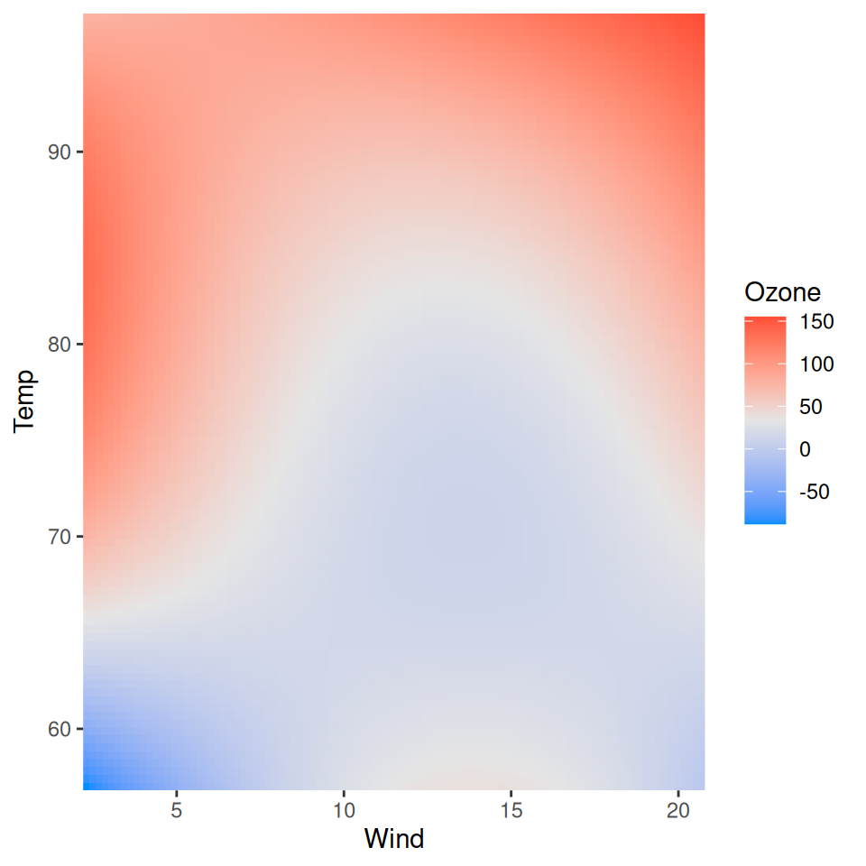

Plot method for visualizing how two variables interact to affect the response in regression models.
Arguments
- x
A
visreg2d()object.- plot.type
The style of plot to be produced. The following options are supported:
image: a filled contourgg: a filled contour plot using ggplot2persp: a 3 dimensional perspective plotrgl: a version of the perspective plot that can be rotated (requires the rgl package to be installed)
- xlab
Axis label for x variable
- ylab
Axis label for y variable
- zlab
Axis label for outcome
- color
For
plot.type='persp'orplot.type='rgl', the color of the surface. Forplot.type='image'orplot.type='gg', a vector of colors used to establish a color palette.- print.cond
If
print.cond==TRUE, the explanatory variable values conditioned on in a conditional plot are printed to the console (default:FALSE). Ifprint.cond==TRUEandtype=="contrast", the conditions will still be printed, but they have no bearing on the plot unless interactions are present.- whitespace
When
xvaroryvaris a factor,whitespacedetermines the amount of space in between the factors. Default is 0.2, meaning that 20 percent of the axis is whitespace.- ...
Graphical parameters can be passed to the function to customize the plots.
References
Breheny P and Burchett W. (2017) Visualization of regression models using visreg. R Journal, 9: 56-71. doi:10.32614/RJ-2017-046
See also
https://pbreheny.github.io/visreg/surface.html, visreg()
Examples
fit <- lm(Ozone ~ Solar.R + Wind + Temp + I(Wind^2) + I(Temp^2) +
I(Wind*Temp)+I(Wind*Temp^2) + I(Temp*Wind^2) + I(Temp^2*Wind^2),
data=airquality)
visreg2d(fit, x="Wind", y="Temp", plot.type="image")
visreg2d(fit, x="Wind", y="Temp", plot.type="image",
color=c("purple", "green", "red"))
visreg2d(fit, x="Wind", y="Temp", plot.type="persp")
## Requires the rgl package
# \donttest{
visreg2d(fit,x="Wind",y="Temp",plot.type="rgl")
#> Loading required namespace: rgl
#> Warning: RGL: unable to open X11 display
#> Warning: 'rgl.init' failed, will use the null device.
#> See '?rgl.useNULL' for ways to avoid this warning.
# }
## Requires the ggplot2 package
# \donttest{
visreg2d(fit, x="Wind", y="Temp", plot.type="gg")

# }